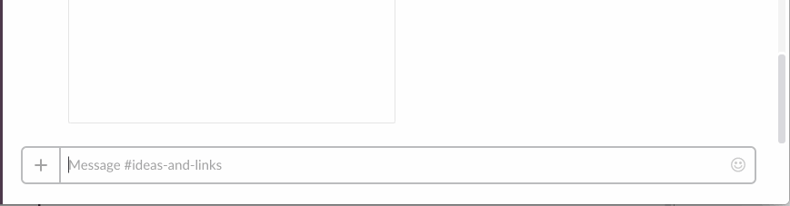

A bot to help you read your way through the next 4 years
Nov 28, 2016
Tutorial for using Google Spreadsheets and Slack to create a reading group bot

Since the election, there’s been a noticeable uptick in activism and engagement around important issues that shape our country. A lot of people in more liberal communities woke up to the fact that they’ve been living in an echo chamber and are actively looking for ways to expand these boundaries, often through discussion or reading. I want to share an open-sourced tool I built to help facilitate this kind of organizing.
Last week, Angelica Coleman reached out to her network about wanting to regularly read and discuss history, culture, and race with other people, and quickly received a lot of interest. She set up a Slack group and we put together a Google spreadsheet for people to use as a collaborative reading list.
The challenge with spreadsheets is that they aren’t always easy to keep up with. Apart from getting email updates every time someone adds something or manually opening and scanning through the spreadsheet to find changes, spreadsheets are sometimes hard to engage with over the long term. We wanted this to be a resource that would continue to involve people and serve as a living document.
In order to incorporate the reading list into the space where people are already having discussions — Slack — I built a bot that helps increase visibility of the list and lets people add directly to it without ever leaving Slack. [It’s now open sourced], and this tutorial is a walk-through of how to set it up for your own Slack reading group. It’s now open sourced
The basic structure of this project was built on top of [this tutorial] by JD Maresco on how to use Google Scripts and Slack to automate standups. We’ll be using a Javascript-based programming environment called [Google Apps Script], built into all Google Apps, which you can use to build helpful tools and improved workflows. this tutorial Google Apps Script
So, let’s get started.

The Goal Allow users to add items to a shared reading list, as well as check for list topics and see list activity via a Slack channel.
What you need
- A Google Account
- Access to a Slack team’s integrations
- Basic Javascript knowledge